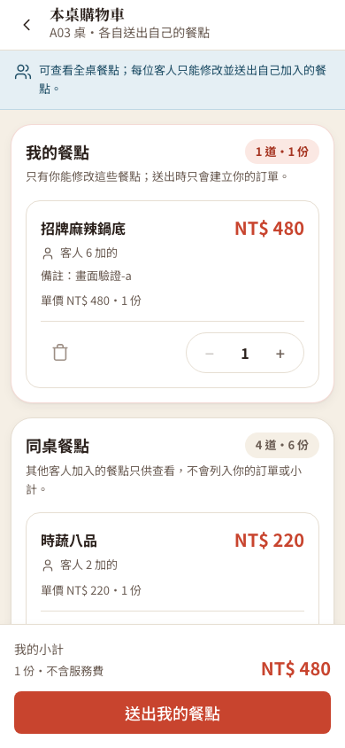
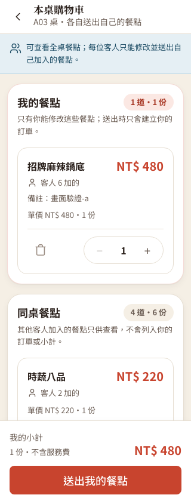
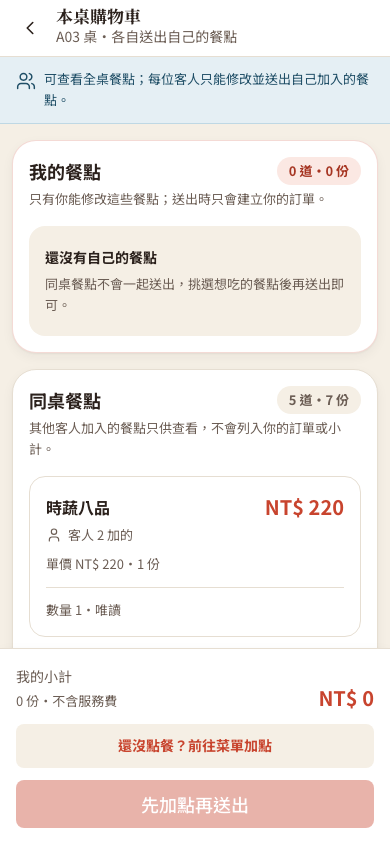

從「整桌一起送」改成「各送各的」
原規格（修正前）
同一用餐場次（session，一桌從開桌到結帳的這一次用餐）的客人共用一份購物車。任何人按送單，整份購物車（包含別人加的品項）會一起建立成訂單。
新規格（e323fac）
畫面分成「本人」與「同桌客人」兩區，別人的品項唯讀。送單只送本人加入的品項，其他人的品項繼續留在購物車。例：A 加牛肉與飲料、B 加蔬菜與豆腐，A 送單後訂單只有 A 的品項，B 的還在，可以自己改再送。
為什麼不算作者的錯？舊流程符合當時「送出整桌點餐」的規格；使用者後來改了「誰的東西由誰送」這條交易邊界，是新舊規格的行為不同。
後續修正：送單通知（修正前）
通知直接數購物車有幾「列」。同一列白飯選了 3 份，通知卻只說送出 1 項，其他客人會誤會實際送單數量。
修正後（de2a129）
逐列加總「份數」：一列 3 份加一列 2 份，通知顯示 5 項，訂單本身的數量沒有改變。顧客送單與櫃檯代客加點共用同一個計算，通知等資料庫交易成功後才發出。為什麼這樣改：通知是給同桌其他人看的，數字要等於實際送出的份數，才不會誤導。
後端決定「誰的品項」，前端只負責看得懂
- 身分來自伺服器：目前客人（guest）從伺服器驗證過的憑證取得，不用瀏覽器自己帶的裝置提示，因為那可以偽造。
- 只查本人的列：repository（集中寫資料庫查詢的類別）新增
findByDiningSession_IdAndAddedByGuest_IdOrderByIdAsc(sessionId, guestId)。Spring Data JPA（JPA 是 Java Persistence API，Java 持久化介面；這個工具依方法名稱自動產生查詢）會把名字拆成「哪一次用餐」「哪位客人加入」「依編號由小到大」。送單只為這些列建立訂單並刪除它們，其他人的列不動。 - 前端分區：
isOwnItem把品項分成置頂的本人區與唯讀的他人區，小計只加總本人列。按鈕能不能按，由isOwnItem搭配locked（後端回傳，代表本桌已停止點餐）決定。 - 後端每次再檢查，為什麼：只隱藏或停用按鈕，擋不住直接送出的請求。更新或刪除他人的品項，後端回
403（拒絕這次操作）；送單也依guestId篩選。前端分區是方便使用，後端驗證才保護資料。 - 同桌同時送單：後端用用餐場次的資料列鎖（row lock，暫時鎖住一筆資料讓同時的操作排隊）讓單號與帳單依序更新，交易（transaction）把相關資料庫步驟當一組。這是原本就有的保護，不是 e323fac 新增的。
- 整合時補上，不算原作者的缺失：切換桌位時遞增 generation（世代編號），非同步請求帶著送出時的編號，回來時桌位已換就忽略。沒有這層，上一桌延遲返回的舊
204（成功、無內容）或舊409（資料狀態衝突）會改掉新桌的處理中狀態、錯誤提示或導頁。
兩位客人的實測結果
- 程式提交
e323fac（fix(yiting): separate personal cart items and submit only owned items）與通知修正de2a129。後端clean package（清掉舊產物再打包）與前端build通過；獨立檢視沒有新發現。 - 56 項 HTTP（Hypertext Transfer Protocol，超文字傳輸協定）檢查、23 項瀏覽器檢查通過：A 對 B 的列發
PATCH（更新）與DELETE（刪除）皆 403；A 送單只含 A 的列，B 的列與選項保留；A 沒有本人列時送單回409 CART_EMPTY，不會代送 B 的；同一 guest 同時送兩個請求，一個 201（建立成功）、一個 409。 - 切桌後，延遲返回的舊 204 與舊 409 都沒有改寫新桌狀態。驗證用兩個隔離的瀏覽器身分模擬兩支手機，不是實體手機；WebSocket 新增曾單次觀察到 129ms，這是單次量測，不是效能保證。
- 證據：HTTP 檢查資料、瀏覽器檢查資料；通知修正的追加驗證見 代客加點介面檢查與瀏覽器操作檢查。想自己重做：開兩個隔離瀏覽器加入同一桌，各自加購、互相改對方的列、各自送單。



本篇真的用到的
- Spring Data JPA 方法名稱查詢：
CartItemRepository依用餐場次與加入者查本人列。 - 擁有者檢查（授權）：後端每次修改、刪除、送單都核對目前 guest，不信任前端。
- 資料庫交易與資料列鎖：送單先鎖用餐場次（
OrderSubmitService的lockOpenSession）。 - 交易提交後才通知（
afterCommit）：通知等資料庫交易成功才發出，避免還沒保存就通知成功（CartNotificationService）。 - WebSocket／STOMP（Simple Text Oriented Messaging Protocol，簡單文字導向訊息協定） 即時推播：同桌其他裝置的購物車即時更新（
useCartWebSocket.ts）。 - 忽略過期回應（世代編號）：前端用
useRef計數器，舊桌的回應不能改新桌畫面（OrderCart.jsx）。 - 學到什麼：「看得到」和「有權操作」是兩件事，權限要由後端每次檢查；規格改變時先分清是新規則還是原本的錯。
專有名詞
- guest（用餐客人）
- 加入某次用餐場次的其中一位客人，同桌每位各有自己的身分。
- owner（資料擁有者）
- 這裡指加入該購物車品項的客人，由伺服器驗證的身分決定。
- repository（資料查詢類別）
- 集中寫資料庫查詢的程式類別，其他程式不用自己拼 SQL（Structured Query Language，結構化查詢語言）。
- JPA — Java Persistence API（Java 持久化介面，現稱 Jakarta Persistence）
- 用 Java 物件表示資料並對應資料表的標準介面。
- isOwnItem／canEdit／locked
- 是否為本人品項／API（Application Programming Interface，應用程式介面）回傳的可編輯欄位／本桌已停止點餐。前端按鈕實際用
isOwnItem加locked，沒有直接讀canEdit。 - transaction（資料庫交易）
- 把多個資料庫步驟當一組，成功一起保存，失敗一起取消。
- row lock（資料列鎖）
- 暫時鎖住一筆資料，讓同時的操作排隊，避免單號或帳單互相覆蓋。
- WebSocket（雙向即時通訊）
- 瀏覽器與伺服器保持連線，伺服器可主動通知同桌其他裝置。
- HTTP 201／204／403／409
- 建立成功／成功但無回應內容／此身分不允許／資料目前的狀態與請求衝突。
- generation（世代編號）
- 切桌時加一的流水編號，請求回來先比對，舊桌的回應就不能改新桌畫面。